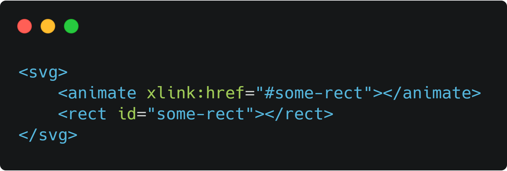
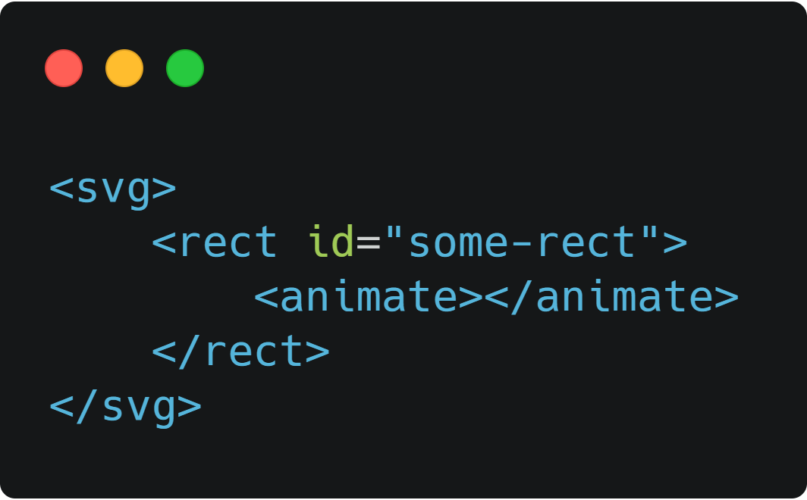

Косович Ярослав, RubyGarage
Line (Линия)
Rect (Прямоугольник)
Circle (Круг)
Ellipse (Элипс)
Pulyline (Ломаная Линия)
Pulygon (Многоугольник)
Path 👑 (Король SVG aka Путь)
|
|
x1, y1 - координаты начальной точки линии x2, y2 - координаты конечной точки линии |
|
|
x, y - Координаты верхнего левого угла; width, height - Ширина и высота; rx, ry - Радиус X и Y углов прямоугольника; |
|
|
cx, cy - Координаты X и Y центра круга; r - Радиус круга; |
|
|
cx, cy - Координаты X и Y центра эллипса; rx, ry - Радиус X и Y эллипса; |
|
|
points - атрибут содержащий в себе набор разделенных координат (X Y) точек, из который состоит Ломаная линия. Каждый такой набор разделяется запятой |
|
|
points - атрибут содержащий в себе набор разделенных координат (X Y) точек, из который состоит Многоугольник. Каждый такой набор разделяется запятой. Особенность в том, что путь автоматически возвращается к первой точке в конце, создавая тем самым замкнутую форму. |
|
|
d - содержит серию команд и параметров этих команд для построения фигуры. M x y - Перепестится к X Y. L x y - Отрисовка линии с координатами X Y. H x y - Отрисовка горизонтальной линии с кочечной координатой Y. V x y - Отрисовка вертикальной линии с кочечной координатой X. Z - Замыкает фигуру. |
|
|
A rx ry x-axis-rotation large-arc-flag sweep-flag x y - Команда и параметры для построения дуг. rx, ry - Радиусы X и Y (на подобии с Элипсом) x-asix-rotation - угол поворота Елипса по котором следует кривая large-arc-flag - определяет, должна ли дуга быть больше или меньше 180 градусов sweep-flag - определяет, должна дуга двигаться по отрицательным углам или по положительным, т.е. по сути определяет по какому из двух кругов она будет идти |
|
|
C x1 y1, x2 y2, x y - Кубическая кривая. x y - Координаты конца кривой. x1 y1 - Контрольая точка начала кривой. x2 y2 - Контрольая точка конца кривой. |
|
|
S x2 y2, x y - S задаёт тот же тип кривой, что и был, но если он следует за другой S или C командой, подразумевается, что первая контрольная точка - отражение той, что использовалась перед этим |
|
|
Q x1 y1, x y - Квадратичная кривая x, y - конец кривой x1 y1 - точка, которая определяет наклон кривой как в начальной, так и в конечной точке |
Ссылкой на ID анимируемого елемента
Внутри анимируемого елемента
See the Pen 1 SVG anim by Yaroslav (@y_kosovych) on CodePen.
fill определяющее, должен ли элемент вернуться в начальное состояние после завершения анимации, или нет.
begin - принимает значения начала анимации:
restart - способ презапуска анимации
repeatCount - способ повторения анимации
See the Pen 2 SVG anim by Yaroslav (@y_kosovych) on CodePen.
type - тип трансформации
from, to - тип трансформации
See the Pen 3 SMIL by Yaroslav (@y_kosovych) on CodePen.
See the Pen SMIL 4 by Yaroslav (@y_kosovych) on CodePen.
calcMode
keyTimes - принимает промежутки (интервалы) времени:
"0.1, 0.15, 0.5"
"0; 1"
keySplines - принимает управляющие точки для каждого интервала (значения ф-ции Безье).
"0.17, 0.67, 0.85, 0.06; 0, 0.6, 1. 0.56; 0, 0.2, 0, 0.8"
"0, 0.2, 0, 0.8"
See the Pen SMIL 5 by Yaroslav (@y_kosovych) on CodePen.
<animateMotion /> - принимает все те атрибуты, чот были расмотрены выше, но так же три новых:
See the Pen SMIL 6 by Yaroslav (@y_kosovych) on CodePen.
See the Pen SMILL 7 by Yaroslav (@y_kosovych) on CodePen.
See the Pen SMILL 8 by Yaroslav (@y_kosovych) on CodePen.